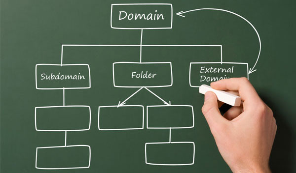

Subdomain WordPress
Adanya Content Management System (CMS) memberikan berbagai macam keuntungan bagi para pengembang website, pengoprasiannya yang mudah, serta memiliki fitur yang cukup komplit, seperti multisite, dimana kita dapat membangun sebuah website yang memiliki website turunan dengan menerapkan sistem subdomain maupun subdirectory.
Tujuan
Alat dan Bahan
Hal yang perlu di persiapkan adalah :
CMS
Content Management System atau sering disebut dengan CMS adalah aplikasi web yang berisikan template untuk mengelola isi halaman web secara mudah atau singkatnya Sebuah system untuk mengatur / untuk memenejemen sebuah website.
Subdomain
Subdomain adalah turunan dari domain utama yang membentuk sebuah URL sebagai alamat website yang diletakkan sebagai awalan sebelum domain utama dan dipisah dengan tanda titik (.). Misalkan domain utama = Latihan.com, subdomain = sdomain, sehingga alamat subdomain yang dapat di buka adalah sdomain.latihan.com.
Xampp
Xampp adalah perangkat lunak bebas, yang mendukung banyak sistem operasi, merupakan kompilasi dari beberapa program. Fungsinya adalah sebagai server yang berdiri sendiri (localhost), yang terdiri atas program Apache HTTP Server, MySQL database, dan penerjemah bahasa yang ditulis dengan bahasa pemrograman PHP dan Perl.
Instalasi Bahan
Konfigurasi
Setelah langkah installasi aplikasi yang dibutuhkan selesai dilakukan, maka langkah selanjutnya untuk memanfaatkan fitur multisite pada CMS WordPress untuk membangun sebuah subdomain atau subdirectory. Berikut langkah-langkah mengkonfigurasi fitur multisite pada CMS WordPress.